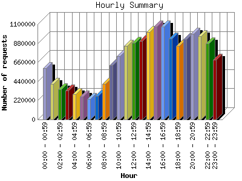

The Hourly Summary identifies the level of activity broken down by each hour. Remember that one page hit can result in several server requests as the images for each page are loaded. This summary also compares the level of activity during working hours and after hours as a total for the report time frame.

| Hour | Number of requests | Number of page requests | |
|---|---|---|---|
| 1. | 00:00 - 00:59 | 591,025 | 44,490 |
| 2. | 01:00 - 01:59 | 412,031 | 35,798 |
| 3. | 02:00 - 02:59 | 349,343 | 34,865 |
| 4. | 03:00 - 03:59 | 335,197 | 32,796 |
| 5. | 04:00 - 04:59 | 291,890 | 33,859 |
| 6. | 05:00 - 05:59 | 261,419 | 32,841 |
| 7. | 06:00 - 06:59 | 239,792 | 32,538 |
| 8. | 07:00 - 07:59 | 269,414 | 31,636 |
| 9. | 08:00 - 08:59 | 412,535 | 38,801 |
| 10. | 09:00 - 09:59 | 623,340 | 45,381 |
| 11. | 10:00 - 10:59 | 730,089 | 47,019 |
| 12. | 11:00 - 11:59 | 847,866 | 49,221 |
| 13. | 12:00 - 12:59 | 882,955 | 51,512 |
| 14. | 13:00 - 13:59 | 903,422 | 54,771 |
| 15. | 14:00 - 14:59 | 1,011,872 | 55,249 |
| 16. | 15:00 - 15:59 | 1,073,912 | 56,496 |
| 17. | 16:00 - 16:59 | 1,071,816 | 56,930 |
| 18. | 17:00 - 17:59 | 936,279 | 52,665 |
| 19. | 18:00 - 18:59 | 851,792 | 52,723 |
| 20. | 19:00 - 19:59 | 926,914 | 52,830 |
| 21. | 20:00 - 20:59 | 985,750 | 55,179 |
| 22. | 21:00 - 21:59 | 962,697 | 55,460 |
| 23. | 22:00 - 22:59 | 874,193 | 52,866 |
| 24. | 23:00 - 23:59 | 688,979 | 44,442 |
| Work Hours (8:00am-4:59pm) | 6,521,932 | 371,198 | |
| After Hours (5:00pm-7:59am) | 6,226,604 | 366,165 | |
This report was generated on January 18, 2009 00:22.
Report time frame December 18, 2003 11:34 to January 18, 2009 00:20.